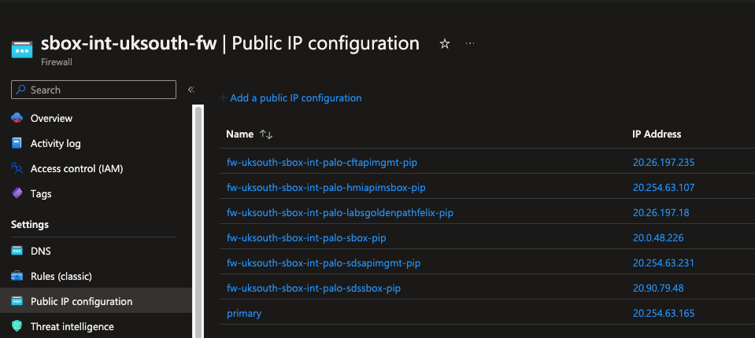
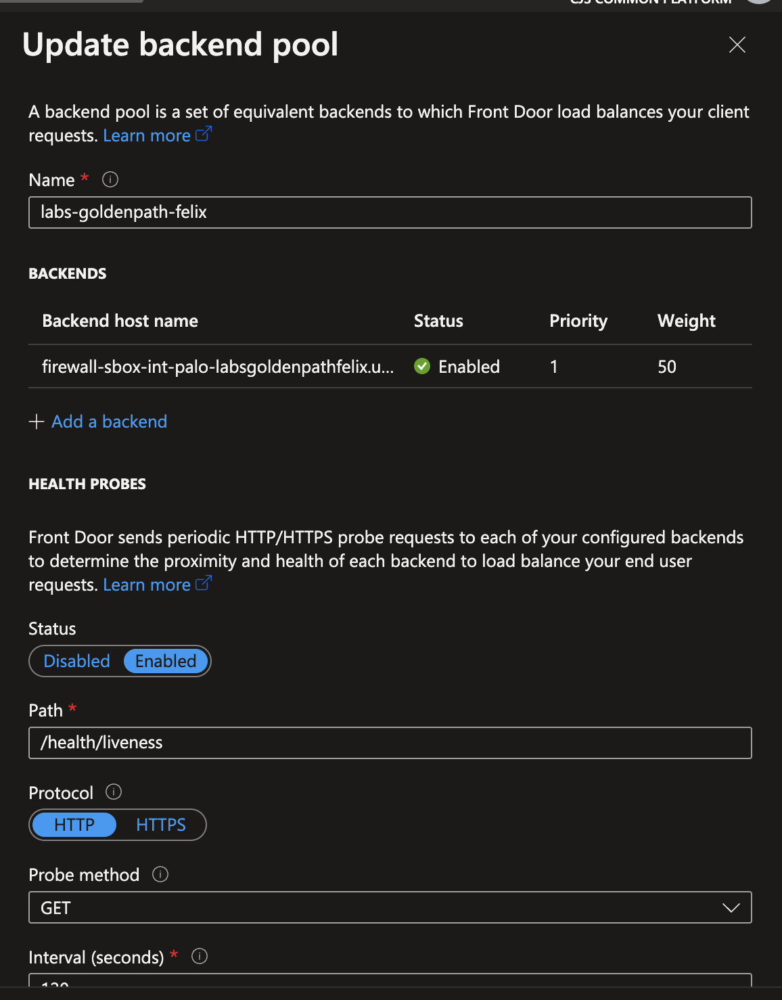

Section 1 - Virtual Networks
Using Pipeline automation
If not already done so, navigate to your lab repository created in the Prereq section.
üì£ Please follow the steps in that section if not already done so
Once you check in, following the Prereq steps, your pipeline will trigger and terraform will init and plan your code. You should now be able to review your plan from the Azure Devops pipeline.
‚ùóÔ∏è Make it a habit to always review your terraform plan. Even if you think you know what’s in it already
Using Manual automation
You can execute the terraform command below from your local PC if you opted out of not following the setup steps. I strongly advice to take the automation route though as it introduces you to the Git repo and Azure DevOps pipelines and some other important concepts in Platform Operations.
üì£ NOTE: You many run into permission issues using the manual process and would need to resolve it with your team members.
Step 1
Run the following commands to confirm you are in the right repository (if running from your local machine)
az login
az account show
az account set --subscription DTS-SHAREDSERVICES-SBOX
az account show
Step 2a
Run the following command terraform commands (if running from your local machine)
terraform init
terraform plan
terraform apply or terraform apply -auto-approve
Select yes to build resource as terraform will prompt you to approve you action if the -auto-approve is not provided
Log into the Azure portal and navigate to the DTS-SHAREDSERVICES-SBOX subscription, you should now have a similar resources created. Search for your resource group name
Terraform resources
Step 2b
If using the pipeline, a commit will init and plan your project. You can also optionally manually trigger a plan or apply from the devops UI.
In a production environment, its advised not to manually apply on master. apply should happen on merge of your PR.
Verify the following exist
- A virtual network (VNet) exist
- VNet has two peerings, one to the HMCTS Hub VNet and the other to the Core Management VNet
- A route table to one default route to
10.10.200.36
❗️WARNING
If your Terraform fails with peering errors it is likely that a previous lab exercise has not been cleared down correctly.
Log into Azure and search for the the `core-infra-vnet-mgmt` virtual network then look at the existing Peering for the vnet.
Search the peers for `labs` and any existing lab peering should appear, if any show as disconnected then these should be removed.
What did I just create?
- A virtual network that’s peered to 2 other VNets using the vnet peering module VNet peering is essential for communication between the various virtual networks. Most importantly, for network traffic to flow from the Hub vnet where the Palo Alto firewall lives to your vnet they need to be peered
- Tagged resources using the tagging module. Tagging is an important part of the way we manage resources and is essential for managing running infrastructure and cost. This is enforced via Azure Policy and is defined in the azure-policy repo
- A custom route table that routes all traffic to the hub. We operate a hub and spoke model. All network traffic should pass through the hub for inspection before being forwarded to it’s destination. In our hub we have 2 active Palo Alto firewall NVA that inspects traffic and forwards it if allowed to the next hop which is usually another virtual network.
- A virtual machine without a public IP. We normally dont allow direct access from the internet to the backend resources. This has to ingress via a route which passes the hub and firewalls. This pattern is followed for most if not all resources or applications.
- A virtual machine that can be accessed via the bastions, as it does not have a public IP, because its been peered with the core-infra-vnet-mgmt vnet, it can be accessed via the HMCTS bastions.
Select the virtual network and copy the vnet address cidr e.g.10.10.7.0/25yours would be different if you used a different CIDR
üì£ NOTE: You will need to be connected to the VPN to access the bastions, this will be explained in more detail later on in this tutorial.
Assignment üìï If you want a bit of a stretch, notice that the vm’s credentials are hard coded and checked into the git repo? That’s a big no no in the real world.
You could try adding a key vault resource that holds the vm’s username and password and also use the random password provider to generate your vm’s password. Take note of dependencies, make sure your key vault and values are created first.
Happy Hunting!!!
Step 3
Checkout the hub-panorama-terraform repo and create a new branch.
Navigate to 02-addresses-sbox.tf file and add a new address object called labs-goldenpath-<yourname> (example below)
{
environments = ["sbox"]
device_group = "sbox"
name = "labs-goldenpath-<yourname>"
value = "10.10.7.0/25"
}
The value should be the cidr address space of your vnet
Next navigate to the 04-policy-rules-sbox.tf file and create a new security policy with the following details
{
environments = ["sbox"]
device_group = "sbox"
name = "labs-goldenpath-<yourname>"
source_zones = [var.zone_untrusted]
destination_zones = [var.zone_trusted]
source_addresses = ["any"]
destination_addresses = ["labs-goldenpath-<yourname>"]
applications = ["web-browsing"]
services = ["application-default"]
action = "allow"
disabled = false
}
The ordering of security rules doesn’t matter, however we recommend you add this just after the trusted-default policy. This is telling the firewall
to allow traffic coming from the “untrusted” zone, internet traffic to your lab VNet in the “trusted” zone
Step 4
Adding your new address object to the G_trusted group will allow your VNet to communicate with other VNets i.e. East/West network flows. For example, when you’re logged in via the VPN you can ssh via the bastions to your virtual machine as both the bastion vnet and your new lab vnet are part of the G_trusted group communication is allowed via the trusted-allow security policy on the Palo Alto firewall.
To do this, navigate to the Address Group folder to 02-address-groups-sbox.tf, add your new address object to the existing G_trusted group’s static_addresses list e.g. add labs-goldenpath-<yourname>.
Example below
{
environments = ["sbox"]
device_group = "sbox"
name = "G_trusted"
static_addresses = [
...,
"labs-goldenpath-<yourname>"
]
}
üõ†Ô∏è Commit your changes, add the relevant details to your PR, review any terraform plan, get approvals then merge
Step 5
Get a team member to review your PR, merge after you have reviewed the terraform plan and approvals have been received. You can either request a specific team member to review or request everyone in a Squad or every in platform operations. By default, 3 members would be selected randomly for you in most repos, you can set up Git notify to keep you informed.
Git reviewers
Step 6
Log into the sbox Panorama Management UI and verify your changes are in place. Please note, you need to be have appropriate AD groups and F5 VPN running to access this resource.
- To find out which groups are needed for the VPN read the Microsoft Entra ID section of the onboarding
- To find out how to get the F5 VPN working read the following guide
- If you are having issues logging into Panorama UI have a look at this Panorama Walkthrough session.
üõ†Ô∏è Commit your changes, add the relevant details to your PR, review any terraform plan, get approvals then merge
What did i just create?
From the above entries you have created a security policy that allows network request flow through the firewall to your virtual machine in your vnet. Without this rule your applications or services would be unreachable as they are not accessible from the internet by default
You should now have resources similar to the following:
Address Object Entry
Address Group Entry
Security Policy Entry
Step 7
Create an Azure Firewall DNAT rule and checkout the hub-terraform-infra repo
To add a new DNAT rule, navigate to the hub_infra-sbox-int.tfvars and add the following snippet. The name of this should be same name of your lab and IP of your apache server (in the virtual machine created in step 2).
Use the next available index in your case. Once this resource is created, you can find it in sbox-int-uksouth-fw
{
name : "labsgoldenpath<yourname>",
palo_ips : {
"uksouth" : "10.10.7.4"
},
port : [80,]
index : 6
}
üõ†Ô∏è Commit your changes, add the relevant details to your PR, review any terraform plan, get approvals then merge
Go to the Azure portal and review your changes in the sbox-int-uksouth-fw,
this will create a new public IP address. You can verify your new IP by looking at the IP configuration (in the IP Configuration menu). On the right of
the firewall menu, you should see something similar to fw-uksouth-sbox-int-palo-labsgoldenpathfelix-pip.
Resources would be similar to the following:
IP Configuration

Azure Firewall rules
üì£ Keep a note of the public IP address
At this point you should be able to access your apache server from your browser by using the default
DNS record created, which is associated with the Azure Firewall.
The DNS record should be similar to http://firewall-sbox-int-palo-labsgoldenpathfelix.uksouth.cloudapp.azure.com/ depending on your lab name.
You can find exact value of this default DNS record by searching for the Public IP resource with the same name as your entry in the Public IP configuration on sbox-int-uksouth-fw.
Step 8
Create a Public DNS record.
Checkout the azure-public-dns
Navigate to sandbox.yml file add a new CNAME record using Azure Frontdoor url hmcts-sbox.azurefd.net
cname:
...
- name: "labs-goldenpath-mfox"
ttl: 300
record: "hmcts-sbox-gufqadefbjgbhkhv.z01.azurefd.net"
shutter: false
The above record corresponds to an endpoint on the hmcts-sbox Front Door and CDN resource.
üõ†Ô∏è Commit your changes, add the relevant details to your PR, review any terraform plan, get approvals then merge
You should now see the similar entries as below
Public DNS entries
Step 9
Create a corresponding Frontdoor entries.
Checkout the azure-platform-terraform repo
Navigate to the sbox.tfvar file and add the below entry to the frontends property list
{
product = "labs-goldenpath-<yourname>"
name = "labs-goldenpath-<yourname>"
custom_domain = "labs-goldenpath-<yourname>.sandbox.platform.hmcts.net"
dns_zone_name = "sandbox.platform.hmcts.net"
backend_domain = ["firewall-sbox-int-palo-labsgoldenpath<yourname>.uksouth.cloudapp.azure.com"]
certificate_name = "wildcard-sandbox-platform-hmcts-net"
disabled_rules = {}
}
üõ†Ô∏è Commit your changes, add the relevant details to your PR, review any terraform plan, get approvals then merge.
üì£ Note: There is an ongoing issue where the pipeline for the above code might try to create two identically named DNS TXT records at the same time. In such case you might see following Terraform failure:
Error: A resource with the ID <XYZ> already exists - to be managed via Terraform this resource needs to be imported into the State. Please see the resource documentation for "azurerm_dns_txt_record" for more information.
Until this is fixed, the work around is to manually delete the TXT record from the DNS Zone in Azure portal and re-run the Terraform.
Once everything is complete you should be able to see “Validation State” as “Approved” for your Custom Domain in hmcts-sbox.
This may take a while so you can go grab a cup of coffee or tea.
Custom Domain validated
What did i just create?
A custom domain that matches to your DNS entry created above, a backend pool that frontdoor sends request to which matches the public ip created above and attached to the Azure firewall and a routing rule that Azure frontdoor needs to process your requests.
Custom Domain
Backend pool

Routing rule
Step 10
Verify that you can
- Navigate to your url e.g.
https://labs-goldenpath-<yourname>.sandbox.platform.hmcts.netand see your web server default page
Final result
- Navigate to the Panorama management UI and see your traffic logs.
To filter the logs you can type in the below query in the search bar
( addr.dst in <your-vm-private-ip> )
Where <your-vm-private-ip> is the same as the IP on your virtual machine
Final result - logs
To learn more about Palo Alto firewall logs watch the Navigating Palo Alto firewall logs KT session
üì£ NOTE: You will need to have F5 VPN connection and non-production Access Package granted before you can SSH into the sandbox bastion. Follow this guide to obtain this.
sshonto you virtual machine by logging into the VPN and connecting to the sandbox bastion by running the command below
az ssh vm -n bastion-sbox -g bastion-sbox-rg --subscription DTS-MANAGEMENT-SBOX-INTSVC
Once one the bastion ssh onto the VM using the below command
curl <your-private-ip>
ssh labsAdmin2023@<your-vm-private-ip>
With the first curl command you should see the raw html output in the terminal to prove that you can reach your VM from the bastion VM.
For the second command, accept the fingerprint prompt and provide the VM password, you should now be on your VM.